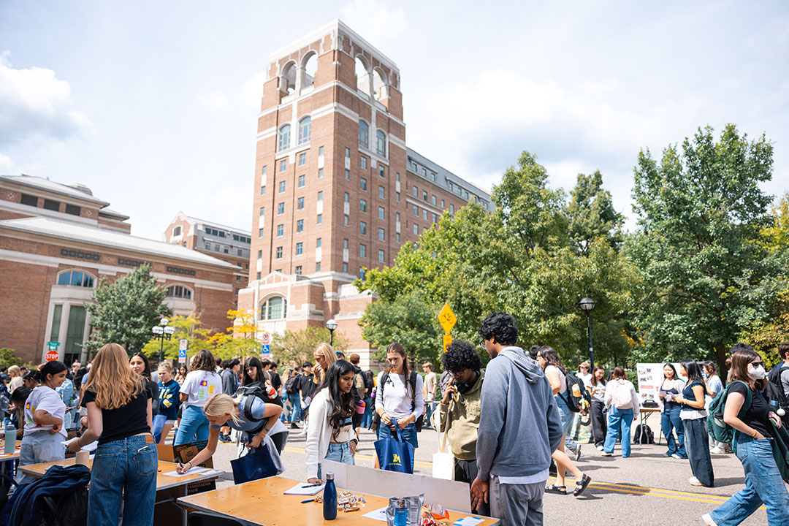
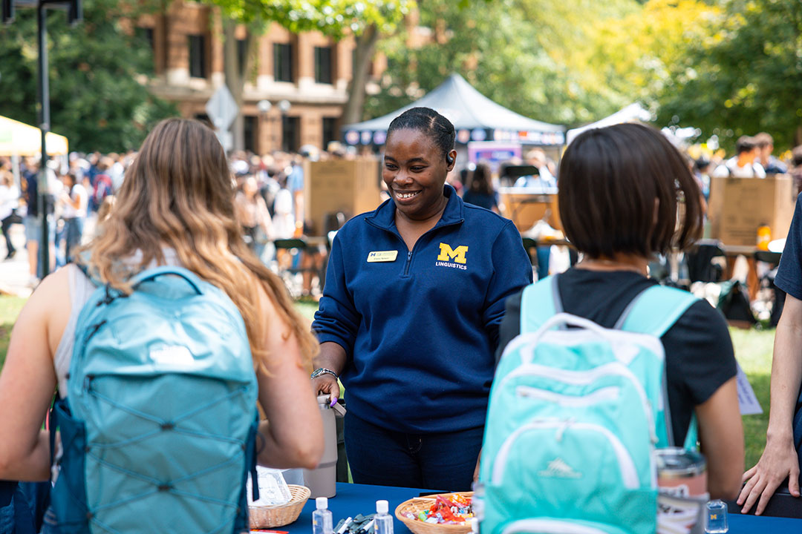

Why Networking Matters
Networking is an important part of the job search process because most jobs are discovered through personal communication rather than traditional postings. It may seem overwhelming to think about networking, especially when life is busy, but building your network does not necessarily mean you have to attend large social functions or continuously meet with potential employers. In fact, many people do not even realize that they network on a daily basis. Are you in contact with professionals in your field of interest at your job, at your internship, or during social events on the weekends? Do you keep in touch with faculty, employers, or peers from your undergraduate or previous professional career? Most likely, yes. These contacts may be helpful as you enter the job market. It is important to be aware of your growing network and utilize this important resource.
Where to find Alumni
CDO Resources
Your network: UMSI & beyond
- Friends and peers (your own personal network)
- Faculty, supervisors, mentors (your own professional network)
- LinkedIn search
Support Tools
Get a Response
Don't get discouraged by low response rate - average response rate to “cold messages” is around 20%. Each contact you connect with is an important and valuable addition to your network!
Goal: get a response
- Phone call
- Zoom/Video Meeting
- In-person meeting
- Email communication
Goal: get a response
DO:
- Keep it short: demonstrate that you respect their time
- Establish a time frame: it's easier to say yes to 20 minute coffee chat in the next 2 weeks than an undefined time commitment
- Personalize the message: convey your respect & value for them as an individual
DON'T:
- Do NOT ask for any information that is readily available online
- NEVER send your resume first. Always ask for permission
- Do NOT begin by asking for a referral - build the relationship first
- NEVER ask for a job!
Writing Your Email to get a Response
- Write a descriptive & enticing subject line
- Start with context that connects you
- Clearly state what you're looking for & why you're reaching out
- Write a descriptive & enticing subject line
- Start with context that connects you
- Say thank you
Writing Your LinkedIn Message to get a Response
- Be (extra) concise - LinkedIn limits you to 300 characters*
- Start with context that connects you
- Clearly state what you're looking for & why you're reaching out
- Be specific - what is your “ask?”
- Be flattering - why are you reaching out to them in particular?
- Make it easy to say yes - define the timeline
- Say thank you
*Pro tip: If you're a part of the UMSI LinkedIn group you can message other members without this word limit!